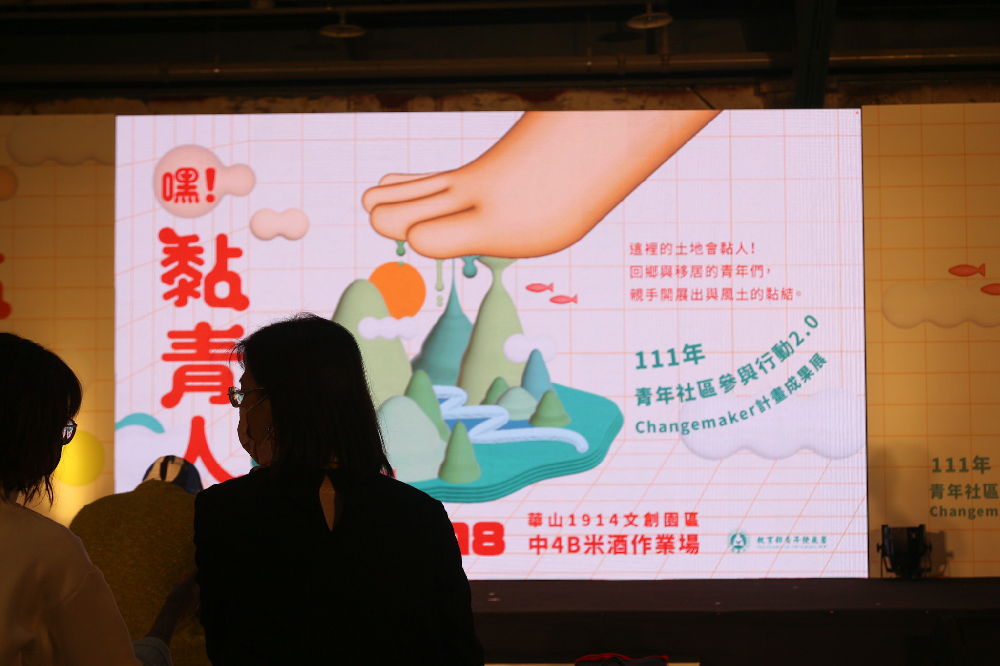
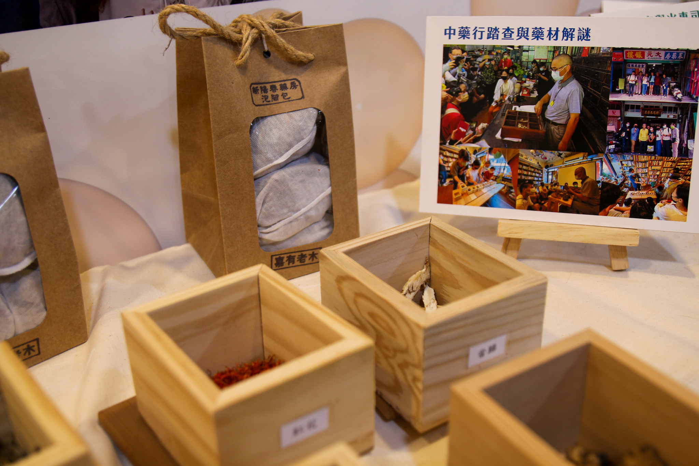
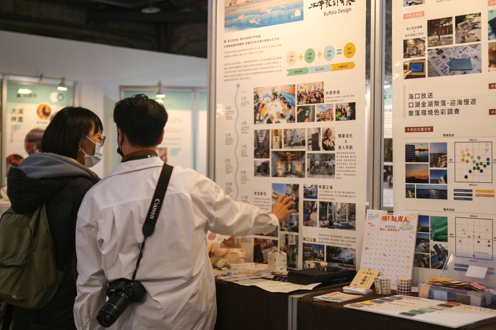
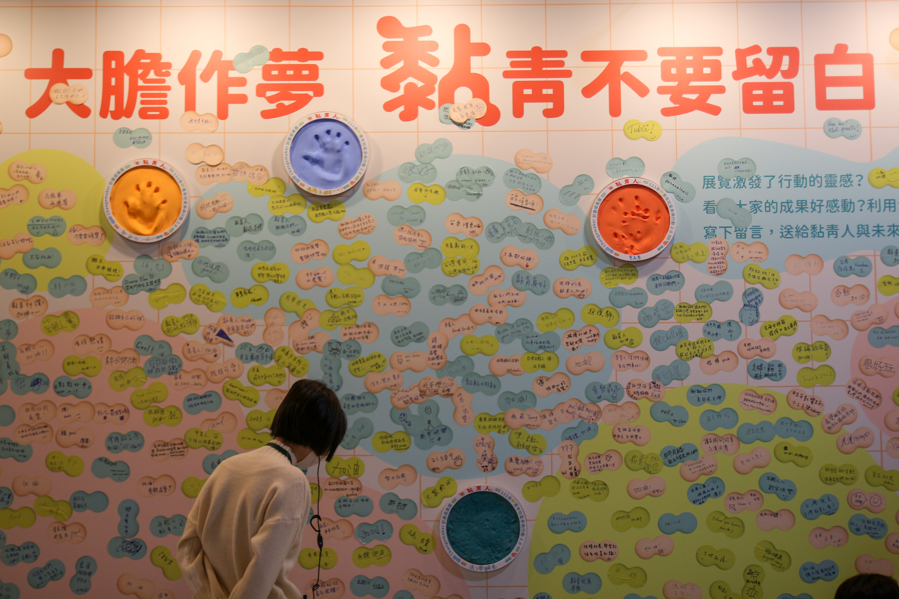

【記者呂羿穎台北報導】舞台上青聚點負責人們堅定地分享創生內容，會場中迴盪著或輕柔、或激昂的自創曲，是見習生結合自身經驗及地方文化的產出。教育部青年發展署《嘿！黏青人》成果展17、18日在華山文創園區熱血開展。自民國110年起，青發署成立「在地學習性青聚點」，媒合各在地團隊與青年，藉由駐點實習深耕家鄉，並透過舉辦成果展，讓民眾了解青聚點傳承經驗與帶領見習實踐計畫後的成效。

《嘿！黏青人》成果展主題以雙腳的方式，詮釋與在地緊緊相黏的目標。計畫期望鏈接青年、青聚點和踐點見習用行動說明：他們不只是會向北漂的年輕人，也可以是向下扎根的「黏」青人。
青聚點為「青年社區參與行動」的分支計畫，原計畫將各類青年提案分級，從夢想案至行動家，最後成為翻轉家。新加入的青聚點則像是成熟的金字塔頂端，連結已存在地方多年的實家或工作室，成為舊新世與在地經驗者交流的橋接地。青發署助理黃郁琁說明，在實地分工上，青年提案須先提出計畫、由青聚點輔導與媒合當地團隊，進而於假期實地駐點。
青聚點已推動到第二年，相較於第一年的實驗性質，青發署於111年進一步修正為較成熟的形式。成果展中也證實，青聚點藉由培訓及成果發表，與見習發展出更完善的溝通及實踐機制。此外，青發署也會辦理青年小聚，增加各據點交流機會，讓全台的青聚點及見習藉由人脈連結，串聯成可以互相交流的網絡。從規模上觀察，聚點更從19組增至26組，擴大計畫的基礎能量。

《嘿！黏青人》成果展中不只有單純的照片和文字記錄，還出現如報紙、雜誌或是文創商品等。各攤位利用多樣化方式，呈現青聚點與見習在過去一年的在地執行成果。 圖／呂羿穎攝
深入了解各聚點成果後可以發現，很多地方本來就有創生能力，但需要有新的資源才能延續。110年就加入青聚點計畫的洪雅書房老闆余國信解釋，書房在加入聚點前就已深耕嘉義多年，藉由辦理每週一次的免費講座，挖掘問題後與土地連結。而加入青聚點後可以提高能見度，連兩年參與計畫也符合長期投入在地的理念。在111年新加入青聚點的見域工作室負責人吳君薇則說，工作室已創作地方誌八年，看到計畫第一年發展的不錯而加入，期望加入後能給年輕夥伴傳承經驗的機會。
現場的見習們向民眾娓娓道來過去一年實際參與在地創生的經歷，顯示出青年在蹲點過程中獲得許多實戰經驗，深入剖析地方議題的能力也有所成長。見域工作室見習呂宇雯表示，自己本身對地方創生相當有興趣，在見習過程中累積了許多與地方深入交流的機會。此外，相較於獨自投入在地，青聚點的形式更有制度。有了據點耕耘多年的經驗，可以減短與家鄉的磨合不適期。

各個青聚點的見習們積極地與參展民眾分享成果，他們是黏青人，緊緊黏著在土地上的人。 圖／呂羿穎攝
兩天的成果展吸引了至少一千名以上的民眾參展，進入會場的民眾在了解各聚點產出後，普遍都覺得驚豔並認可計畫成果。參展民眾涂名毅認同傳統文化及在地商家成功的經驗需要被傳承，「看完展覽後覺得，青據點喚起年輕人對家鄉的愛，計畫碰撞出的情感連結讓我很感動。」談及辦展目的，黃郁翔則表示，希望藉成果展吸引更多人關注地方發展，也盼能透過聚點及民眾反饋，繼續完善培訓見習的計畫細節。

民眾可以透過便條紙留下對參展青年或聚點的感想及鼓勵，成為成果展的一部分。密密麻麻的文字是感動後遺留的痕跡，滿牆的紙條說明了在地創生中，年青不留白。 圖／呂羿穎攝